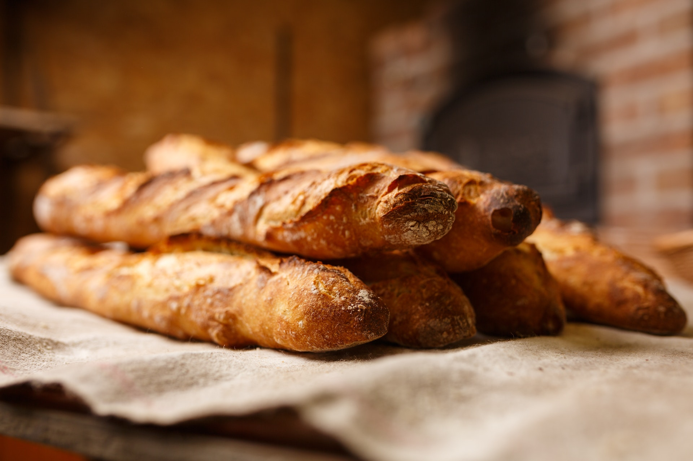

Knusprige Baguettes
Zutaten für
Zutaten für
3
Baguettes-
670
g Mehl
-
1,5
TL Salz
-
25
g Hefe
-
1
TL Zucker
-
400
ml lauwarmes Wasser
-
50
ml Salzwasser
Zubereitung
In einer Schuessel Mehl mit dem Salzwaser vermischen,eine grosse Kule eindruecken und dortdie Hefe Stueck fuer Stueck hinzufuegen.
Anschliesend den Zucker in die Kuhle geben und mit 50ml Wasser angiesen.
Die Hefe in der Kuhle vorsichtig umruehren bis sie sich im Wasser gut aufgeloest hat.
Das Ganze abdecken, zum Beispiel mit einem Kuechentuc h und 30 Minuten gehen lassen.
Den Rest des lauwarmen Wassers hinzufuegen und alles gruendlich zu einem Teig verkneten
Anschliesend den Teig in 3 gleiche Teile portionieren und duenn zu Rechtecken ausrollen.
Anschliesend einrollen und so formen bis ein Baguette entsteht.
Nun auf ein Backblech geben und eine halbe Std in in Ruhe lassen.
Waehrenddessen den Back-Ofen auf 220 Grad vorheizen.
Baguettes mit Sakzwasser bestreichen und zusammen mit einer Schale voll mit Wasser in den Backofen schieben.
Rund 25 Minuten backen bis sie eine geldbraune Farbe haben.
Anschliesend den Zucker in die Kuhle geben und mit 50ml Wasser angiesen.
Die Hefe in der Kuhle vorsichtig umruehren bis sie sich im Wasser gut aufgeloest hat.
Das Ganze abdecken, zum Beispiel mit einem Kuechentuc h und 30 Minuten gehen lassen.
Den Rest des lauwarmen Wassers hinzufuegen und alles gruendlich zu einem Teig verkneten
Anschliesend den Teig in 3 gleiche Teile portionieren und duenn zu Rechtecken ausrollen.
Anschliesend einrollen und so formen bis ein Baguette entsteht.
Nun auf ein Backblech geben und eine halbe Std in in Ruhe lassen.
Waehrenddessen den Back-Ofen auf 220 Grad vorheizen.
Baguettes mit Sakzwasser bestreichen und zusammen mit einer Schale voll mit Wasser in den Backofen schieben.
Rund 25 Minuten backen bis sie eine geldbraune Farbe haben.
Rezept erstellt von:
Frank